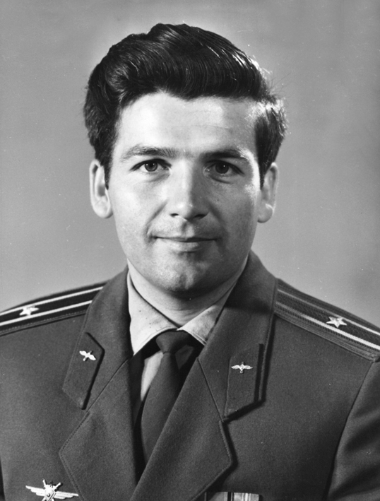

Климук Пётр Ильич – командир космического корабля «Союз-13», майор; командир космического корабля «Союз-18» и орбитальной станции «Салют-4», подполковник.
Родился 10 июля 1942 года в деревне Комаровка Брестского района Брестской области Белорусской ССР (ныне Брестского района Брестской области Республики Беларусь). Белорус. В 1959 году окончил 10 классов школы в родной деревне.
В армии с августа 1959 года. До июня 1960 года обучался в 10-м военном авиационном училище первоначального обучения лётчиков (город Кременчуг Полтавской области, Украина), которое было расформировано. В октябре 1964 года окончил Черниговское высшее военное авиационное училище лётчиков. В декабре 1964 – октябре 1965 – старший лётчик 57-го гвардейского истребительного авиационного полка ПВО (в 6-й Ленинградской армии ПВО; аэродром Вещёво, Выборгский район Ленинградской области). Летал на реактивном истребителе МиГ-17.
В отряде космонавтов с октября 1965 года по март 1982 года. Совершил 3 космических полёта общей продолжительностью 78 суток 18 часов 19 минут. 28-й космонавт СССР и 69-й космонавт планеты.
В 1967–1969 годах проходил подготовку по программе облёта Луны в качестве командира экипажа. В 1969–1971 годах готовился в качестве командира экипажа к полёту для отработки стыковки модулей лунного корабля. Программа была закрыта, полёт отменён.
В октябре 1971 – июле 1972 года проходил подготовку к полёту на орбитальную станцию ДОС-2 в качестве командира резервного экипажа. Полёт был отменен из-за аварии ракеты-носителя при выведении станции на орбиту 29 июля 1972 года.
В октябре 1972 – апреле 1973 года в качестве командира резервного экипажа готовился к полёту на орбитальную станцию ДОС-3 – модифицированный вариант «Салюта-1». Полет был отменён из-за аварии ДОС-3 на орбите в мае 1973 года.
С мая 1973 года проходил непосредственную подготовку к полёту по астрофизической программе в качестве командира дублирующего экипажа. За несколько дней до старта было принято решение отправить в космос дублирующий экипаж.
18–26 декабря 1973 года в качестве командира космического корабля «Союз-13» совершил космический полёт продолжительностью 7 суток 20 часов 56 минут.
Корабль был оснащён космической обсерваторией «Орион-2». Экипаж провёл астрофизические исследования, спектрографирование участков звёздного неба и многозональную фотосъёмку Земли. Впервые за всю историю наблюдений удалось получить ультрафиолетовую спектрограмму интереснейшего для астрономов объекта – планетарной туманности. В ней было впервые зафиксировано два новых для планетарных туманностей химических элемента – алюминий и титан. Было также открыто много новых слабых звёзд.
За успешное осуществление орбитального полёта на космическом корабле «Союз-13» и проявленные при этом мужество и героизм Указом Президиума Верховного Совета СССР от 28 декабря 1973 года подполковнику Климуку Петру Ильичу присвоено звание Героя Советского Союза с вручением ордена Ленина и медали «Золотая Звезда».
В январе – декабре 1974 года проходил непосредственную подготовку в качестве командира резервного экипажа, а с января 1975 года – в качестве командира дублирующего экипажа для полёта на станцию «Салют-4». 5 апреля 1975 года был дублёром командира космического корабля «Союз-18-1» В.Г.Лазарева. Корабль не вышел на орбиту из-за аварии ракеты-носителя в момент отделения от неё хвостового отсека третьей ступени.
С апреля 1975 года готовился к полёту в качестве командира экипажа для полёта на орбитальную станцию «Салют-4».
24 мая – 26 июля 1975 года в качестве командира космического корабля «Союз-18» и орбитальной станции «Салют-4» совместно с В.И.Севастьяновым совершил второй космический полёт продолжительностью 62 суток 23 часа 20 минут.
Это была вторая экспедиция на орбитальную станцию «Салют-4». Одной из задач полёта было изучение воздействия долгосрочного пребывания в космосе на человека. Были проведены комплексные исследования реакции организма человека на действие факторов длительного космического полёта, испытаны различные средства профилактики неблагоприятного действия невесомости (за что впоследствии экипаж был удостоен Государственной премии СССР).
За успешное осуществление длительного полёта на орбитальной научной станции «Салют-4» и транспортном корабле «Союз-18» и проявленные при этом мужество и героизм Указом Президиума Верховного Совета СССР от 27 июля 1975 года полковник Климук Пётр Ильич награждён орденом Ленина и второй медалью «Золотая Звезда».
В 1977 году заочно окончил Военно-воздушную академию имени Ю.А.Гагарина (Монино). С августа 1977 года готовился к полёту на орбитальную станцию «Салют-6» в качестве командира основного советско-польского экипажа.
27 июня – 5 июля 1978 года в качестве командира комического корабля «Союз-30» совместно с М.Гермашевским (Польша) совершил третий космический полёт продолжительностью 7 суток 22 часа 3 минуты.
Это были второй международный полёт по программе «Интеркосмос» и третья экспедиция посещения орбитальной станции «Салют-6», на которой в это время работала вторая основная экспедиция – В.В.Ковалёнок и А.С.Иванченков. Впервые в космосе побывал космонавт из Польши.
В январе 1978 – сентябре 1991 – заместитель начальника Центра подготовки космонавтов имени Ю.А.Гагарина по политчасти.
В 1983 году заочно окончил Военно-политическую академию, в 1987 году – Академические курсы переподготовки и усовершенствования командного состава при Военно-политической академии.
В сентябре 1991 – сентябре 2003 – начальник Центра подготовки космонавтов имени Ю.А.Гагарина. С июля 2003 года генерал-полковник П.И. Климук – в запасе.
В 2001–2015 – заведующий кафедрой космического мониторинга Московского авиационного технологического института. Работал советником в Посольстве Республики Беларусь в России.
Лётчик-космонавт СССР (28.12.1973). Заслуженный работник МВД. Военный лётчик 3-го класса (1964), космонавт 1-го класса (1978).
Почётный член Национальной Академии наук Беларуси с 2017 года, член-корреспондент Международной академии астронавтики. Доктор технических наук (2000), кандидат технических наук (1995), профессор (2005).
Депутат Верховного Совета СССР 10-го созыва (в 1979–1982 годах), народный депутат СССР в 1989–1991 годах.
Живёт в Звёздном городке Щёлковского района Московской области.
Награждён российскими орденами «За заслуги перед Отечеством» 3-й (02.03.2000) и 4-й (09.04.1996) степени, Почёта (15.07.2022), советскими 3 орденами Ленина (28.12.1973; 27.07.1975; 05.07.1978), орденом «За службу Родине в Вооружённых Силах ССР» 3-й степени (17.02.1984), медалями; белорусскими орденами «За службу Родине» 2-й степени (15.07.2002) и Дружбы народов (16.07.2007), казахским орденом Благородства (1995), иностранными орденами «Крест Грюнвальда» 1-й степени (Польша; 05.07.1978), Почётного легиона степени великого офицера (Франция; 2004), «За военные заслуги» (Сирия), Дружбы и Сотрудничества (Сирия; 08.1987), иностранными медалями.
Лауреат Государственной премии РФ (05.08.2002, за работу «Управление движением при сенсорных нарушениях в условиях микрогравитации и информационное обеспечение максимального контроля качества визуальной стабилизации космических объектов»), Государственной премии СССР (03.11.1978, за цикл работ по медицинскому обоснованию и внедрению комплекса методов и средств профилактики неблагоприятного влияния невесомости на организм человека, обеспечивших возможность осуществления длительных пилотируемых космических полётов), премии Советской Эстонии (11.1977, за результаты исследования серебристых облаков и поверхности Земли с использованием инфракрасного телерадиометра «Микрон» с орбитальной научной станции «Салют-4») и премии Ленинского комсомола (10.1978, за сценарий документального фильма «Обычный космос»).
Удостоен Золотой медали имени К.Э. Циолковского Академии наук СССР (15.09.1977, за успешное осуществление орбитального полёта на космическом корабле «Союз-13» и двухмесячного полёта на орбитальной станции «Салют-4» и корабле «Союз-18») и Золотой медали имени Н. Коперника Академии наук ПНР (24.07.1978, за большой вклад в пилотируемую космонавтику).
Почётный гражданин Брестской области (Беларусь; 2009), городов Калуга (27.12.1973), Гагарин (Смоленская область; 09.03.1977), Брест (Беларусь; 1974), Новополоцк (Витебская область, Беларусь; 1978), Чернигов (Украина; 12.04.1976), Кременчуг (Полтавская область, Украина; 2013), Байконур (Казахстан; 1977) и Радом (Польша; 1978).
Бронзовый бюст П.И. Климука установлен в Бресте. В Витебске установлен памятник П.И. Климуку и М. Гермашевскому, а в селе Томашовка Брестского района – бюст П.И. Климука. Его именем названы средняя школа № 4 в городе Щёлково Московской области, улицы в городах Берёза (Брестская область, Беларусь), Клецк (Минская область, Беларусь) и Рогачёв (Гомельская область, Беларусь), а также в нескольких сёлах Беларуси. В деревне Комаровка Брестского района Брестской области на доме, в котором он родился и вырос, установлена мемориальная доска.